East Malaysia 2002

Hillview Gardens
|
◎ 2002 WW WPX CONTEST(FONE)
週末はWW WPX CONTEST(FONE)に参加した。
9M6AACの設備、アンテナとコンデションを考えハイバンドのシングルバンド/シングルOPで2局で同時運用することになった。 |
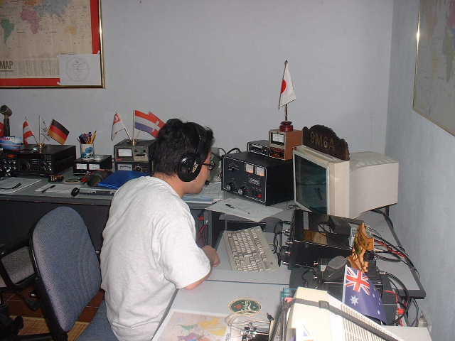
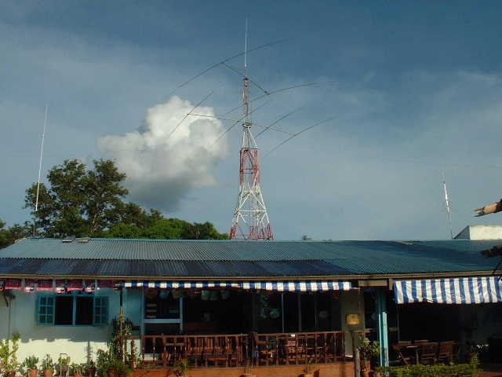
9M6Aのコールサインでコンテスト参加中のJK7TKE・福井さん。
9M6AACのメインのHFアンテナ。この塔からローバンドのアンテナも張られている。
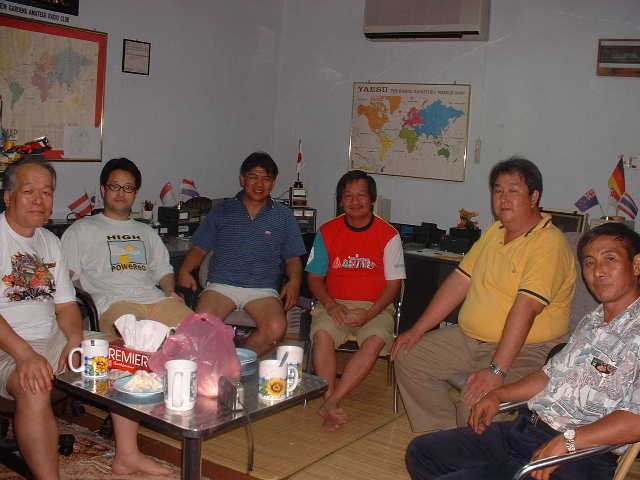
滞在中にシャックを訪れたローカル局と一緒に。
内陸部の中心の街ケニンガウ(Keningau)には多くのハムが居る

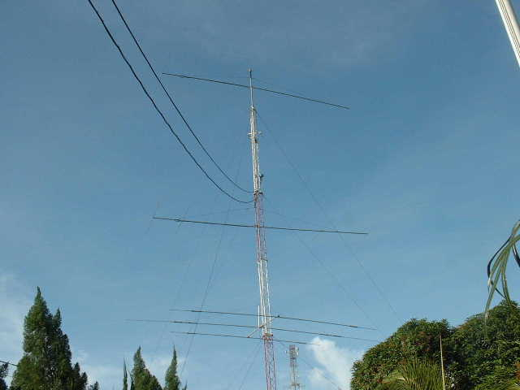
9M6AACの6mのシャック。6mのアンテナは下段が固定された変則の9ele×2
訪問時、固定アンテナは太平洋方面(東)を向いていた。下は固定のWARC・Bandの3ele
|
◎ Hillview Gardensの休日
|
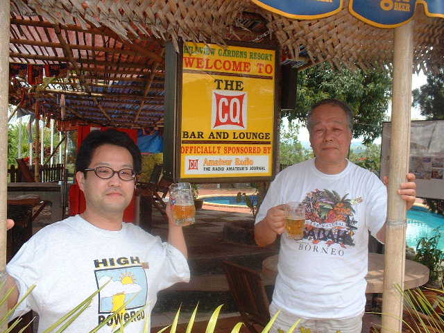
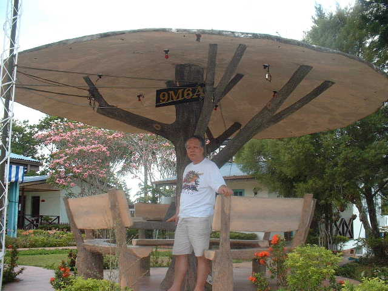
(左)US-CQがスポンサー？の"Bar & Lounge"で生ビールを一杯
(右)庭のベンチで運用も可能。写真の左側に小型アンテナタワーが見える
Hillview Gardens訪問者のもう一つのセレモニーはセメントの"記念手形"を作成すること
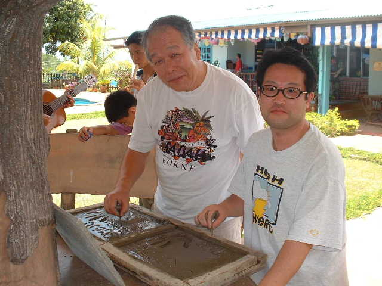
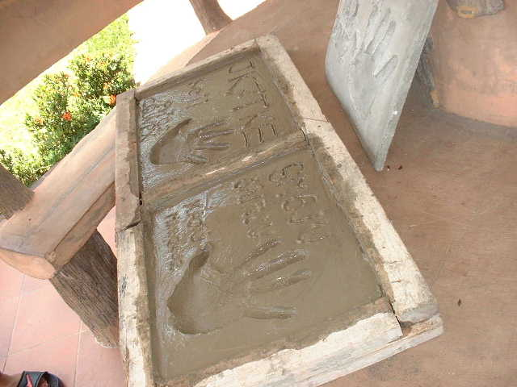
"儀式"が終るまでオーナーの9M6MU・AlfonsがギターでBGMを演奏してくれる
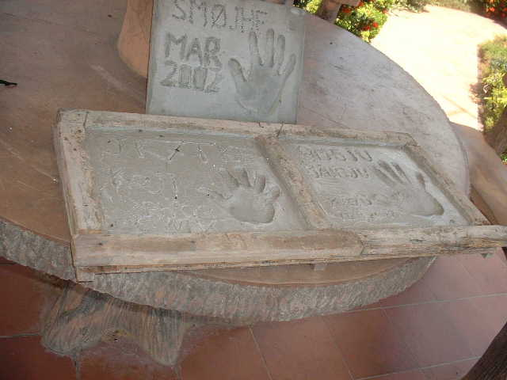
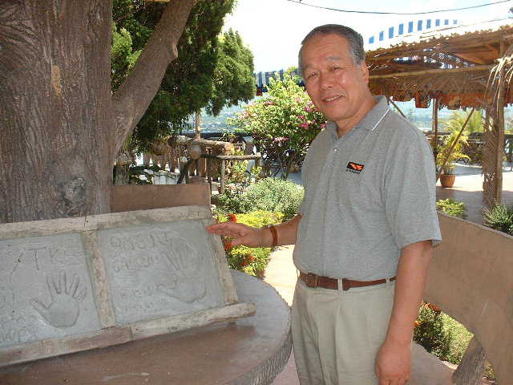
完成した手形。一週間前に滞在していたSM0JHFの手形も見える
手形はHillview Gardensの"訪問者ミュージアム"に飾られるとのこと
|
◎ Kota Kinabaluの休日
Hillview GardensからKota Kinabaluに帰って、再びKinarutの9M6LSCのシャックに滞在。 |
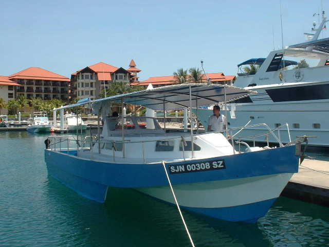
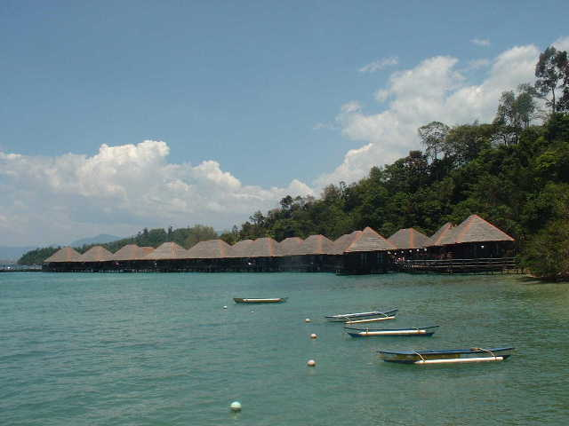
10人は余裕で乗れる9M6GY・Godfrey所有の"釣り船"。右はマヌカン島の海岸に並ぶ宿泊施設
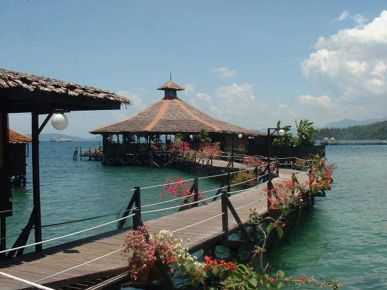
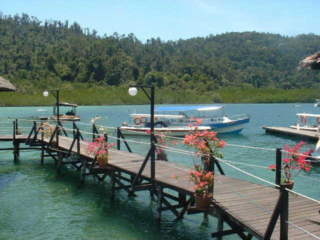
(左)海上に突き出たシーフード・レストラン。 ホテルや各施設はこの桟橋で結ばれている
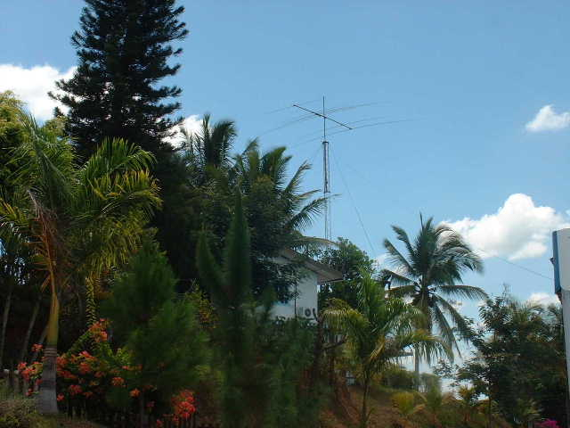 |
Hillview Gardens 2002(1) |